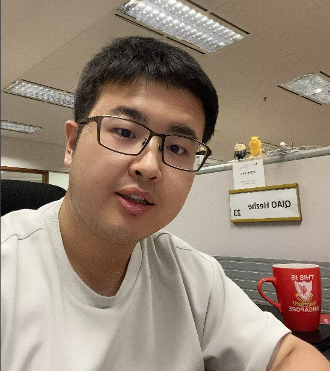

Biography
I am a Ph.D. candidate at [Singapore Management University] , supervised by [Prof. Guansong Pang].
My research interests are data mining and machine learning with a primary focus on recognizing and generalizing to abnormal, unknown, or unseen data to develop trustworthy AI systems for open environments.
Currently, I mainly focus on the anomaly detection, out of distribution and foundation model on graph. In addition, I also explore some related areas include:
Graph representation learning
Anomaly detection (time series/image/video/tabular data)
Open-world learning
Safety and security in graph foundation models
Fake news and misinformation detection
I feel excited to work with colleagues at Machine Learning & Applications (MaLA) Lab , we investigates novel machine learning techniques, with a research theme focused on abnormal/unknown
data instance detection and generalized learning algorithms for creating trustworthy continual AI systems.
[Job searching !!] I'm looking for a summer 2025 internship opportunity in the US, focusing on large language models, graph learning, or anomaly detection, feel free to contact me (hezheqiao[at]gmail.com, Linkedln, or WeChat ) if you have any job recommendations.
Pin
Check out our survey on deep graph anomaly detection Deep Graph Anomaly Detection: A Survey and
New Perspectives and its github repository
News
2024/10: One paper on time series data imputation is accepted to BIBM 2024
2024/9: Check out our survey on deep graph anomaly detection Deep Graph Anomaly Detection: A Survey and
New Perspectives and its github repository
2024/9: One paper on semi-supervised graph anomaly detection is accepted to NeurIPS 2024
2024/9: One survey paper on deep hate speech detection is accepted to JDSA
2024/8: Invited as PC Member for ICLR 2025
2024/8: One paper on crossing intent prediction is accepted to ICONIP 2024
2024/7: Honored to receive the SMU Presidential Doctoral Fellowship (2024)
2024/6: Invited as PC Member for NeurIPS 2024
2024/5: One paper on normality learning for time series anomaly detection is accepted to ECML PKDD 2024
2024/4: I am very honored to be a student volunteer for WebConf 2024 , see you in Sentosa, Singapore, May 13 to May 17, 2024.
2024/2: Our PerCom24 paper DiTMoS is featured as Mark Weiser Best Paper Award !
2024/1: Invited as PC Member for PAKDD 2024
2024/1: Excited to announce that my research has now reached 100 citations on Google Scholar!
2023/12: One paper on diverse Tiny model selection is accepted to PerCom 2024
2023/09: One paper on unsupervised graph anomaly detection is accepted to NeurIPS 2023
2023/08: One paper on AI in medicine is accepted by Journal of the American Medical Informatics Association : JAMIA
2023/01: I am very honored to be a student volunteer for WSDM 2023 , see you in SMU, Singapore, February 27 to March 3, 2023.
2023/01: Check out our survey paper about deep learning for hate speech detection
2022/07: I have been offered admission into SMU-SCIS PhD programme with a full scholarship. The academic term will start on 9 January 2023.
2022/06: I have finished my master and will join School of Computing and Information Systems @ SMU as Research Engineer.
2022/05: Two papers on Review-based recommendation system and Alzheimer's disease clinical scores prediction are accepted to IJCNN 2022.
Honors and Awards
SMU Presidential Doctoral Fellowship 2024
Mark Weiser Best Paper Award, PerCom 2023
PhD Full Scholarship, Ministry of Education, Singapore 2023
Dean Scholarship, Chinese Academy Science 2022
First prize, Dean Scholarship of Chengdu Branch, Chinese Academy Science 2021
Outstanding Student of University of the Chinese Academy of Sciences 2020, 2021
Outstanding graduates, Outstanding Student of the Chengdu University of Technology 2016,2017,2018,2019
Hundred Excellent Academic Dissertations of the Chengdu University of Technology 2019
Background
2022-present: Ph.D. in Computer Science, Singapore Management University, Singapore
2019-2022: Master in Computer Science, University of the Chinese Academy of Sciences, China
2015-2019: Bachelor in Computer Science and Technology, Chengdu University of Technology, China
Professional Experiences
School of Computing and Information Systems, SMU, research engineer advised by [Prof. Guansong Pang] 2022-2023
Chongqing Key Laboratory of Big Data and Intelligent Computing, CIGIT, research student advised by
[Prof. Mingsheng Shang], [Prof. Lin Chen] and [Prof. Fan Zhu] 2020-2022.
Institute of Mountain Hazards and Environment, CAS, research assistant advised by [Prof. Xiaopeng Leng] and [Prof. Shaojie Zhang] 2019-2020.
Services
Program Committee (Selected)
ICLR NeurIPS
Journal Reviewer (Selected)
International Journal of Data Science and Analytics, JAIR, IEEE TNNLS, IEEE TAI
Teaching Experience
CS425: Natural Language Communication, (Undergraduate), Singapore Management University, Tutor, Autumn 2024
Students Co-supervision/Collaboration
Yutong Chen: PhD at UCAS with Prof. Guansong Pang, 09/2023-, time series anomaly detection (ECML PKDDx1)
Guolei Zeng: BS at FZU with Prof. Guansong Pang, 06/2024-, graph anomaly detection
Guoguo Ai: PhD at NJUST with Prof. Guansong Pang, 11/2024-, graph retrieval-augmented generation
Hongbin Liang: MS at UCAS with Assistant Prof. Lin Chen, 03/2024-, pedestrian crossing intent prediction (ICONIPx1)
Haifu Ye: MS at UCAS with Assistant Prof. Lin Chen, 03/2024-, video anomaly detection
Ye Su: MS at UCAS with Assistant Prof. Lin Chen, 06/2024-, time series prediction (BIBMx1)
Xiaoya Fang: MS at UCAS with Assistant Prof. Lin Chen, 11/2024-, fake news and misinformation detection